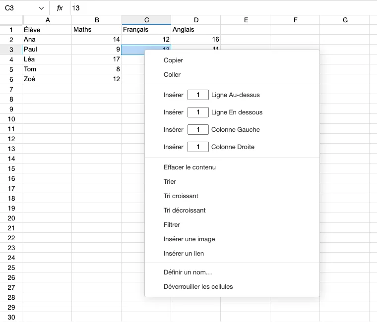

Lignes et colonnes
Taille
| Action | Effet |
|---|---|
| tirer le bord droit de l’en-tête d’une colonne | change sa largeur |
| tirer le bord bas de l’en-tête d’une ligne | change sa hauteur |
| clic droit sur l’en-tête › Largeur, Hauteur | taille en pixels, pour toutes les colonnes ou lignes sélectionnées |
Insérer, supprimer
Clic droit dans une cellule ou sur un en-tête : Insérer 1 Ligne Au-dessus, Insérer 1 Ligne En dessous, Insérer 1 Colonne Gauche, Insérer 1 Colonne Droite. Le nombre se tape dans le champ. Clic droit sur un en-tête : Supprimer Ligne, Supprimer Colonne.

Les formules sont ajustées : leurs références suivent les cellules déplacées. La limite est de 10 000 lignes et 1 000 colonnes.
Masquer
Clic droit sur l’en-tête › Masquer Ligne, Masquer Colonne. Les cellules masquées restent calculées. Pour les rendre, sélectionner les en-têtes qui les entourent, puis clic droit › Afficher les éléments masqués.
Figer
Les lignes et colonnes figées restent visibles pendant le défilement. Sélectionner la cellule limite, puis ou Affichage › Figer :
| Commande | Restent visibles |
|---|---|
| Figer jusqu'à la ligne actuelle | les lignes jusqu’à celle de la cellule, comprise |
| Figer jusqu'à la colonne actuelle | les colonnes jusqu’à celle de la cellule, comprise |
| Figer jusqu'à la cellule actuelle | les deux |
| Annuler le figement | rien de particulier |
Pour garder la ligne d’en-tête : cliquer une cellule de la ligne 1, Figer jusqu'à la ligne actuelle.